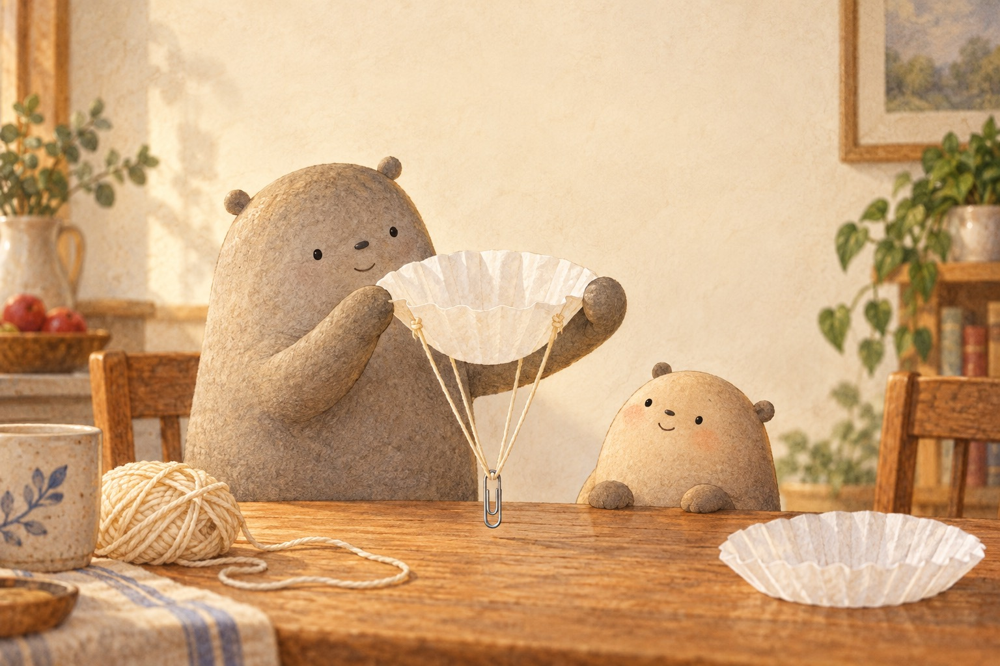
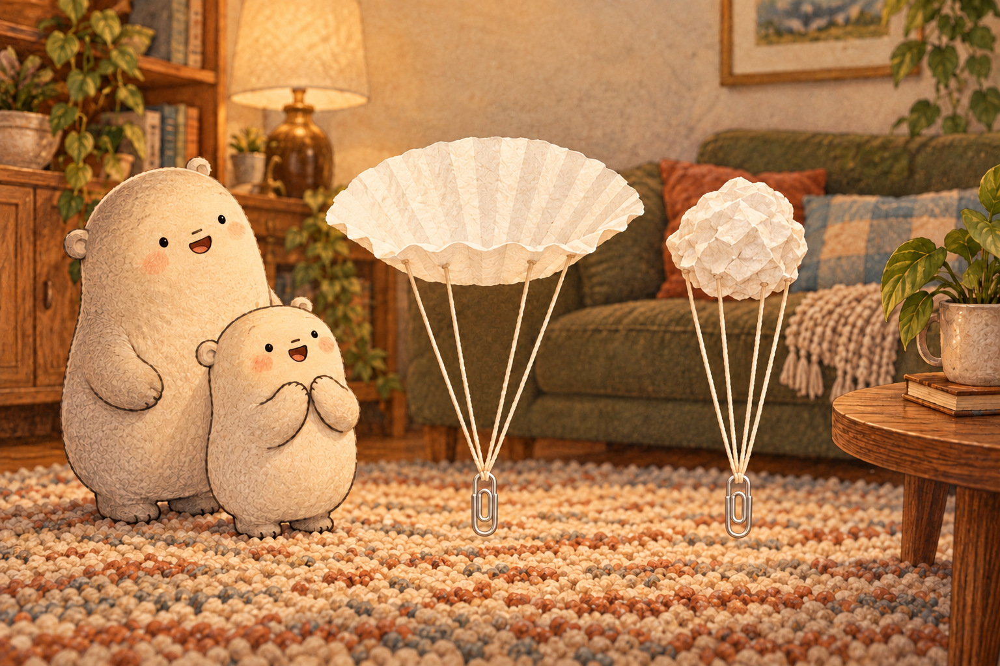
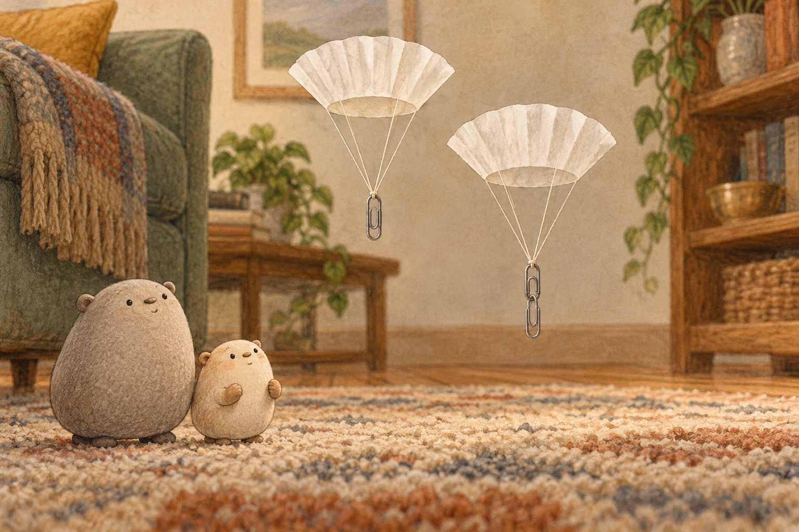

Six clues in a slow fall
A Coffee Filter Parachute

Big held the coffee filter open like a tiny canopy. Gravity pulled the parachute toward the floor. As it moved, tiny moving pieces of air pushed back. This air resistance, or drag, slowed the fall but did not stop gravity.

Little dropped the filter flat, then crumpled the same filter and dropped it again. Its weight had not changed, but its shape had. The wide filter showed more surface area to the air, made more drag, and floated down longer.

Next they kept the canopy and strings the same. One parachute carried one paperclip; another carried two. The second paperclip added weight, so gravity pulled down harder while the same canopy provided drag. In this test, that parachute descended faster. Without air, the extra paperclip would not make it fall faster.
- gravity
- the pull that draws objects toward Earth
- air
- tiny moving pieces of gas all around us
- air resistance / drag
- air pushing against an object moving through it
- canopy
- the wide top of a parachute
- surface area
- how much outside space a surface covers
- weight
- the pull of gravity on an object
- fair test
- a test that changes one thing at a time
- predict
- say what you think will happen before a test
- measure
- use numbers to describe what happens